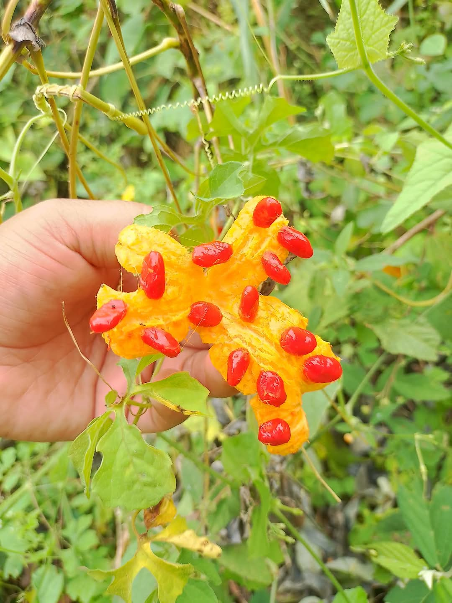
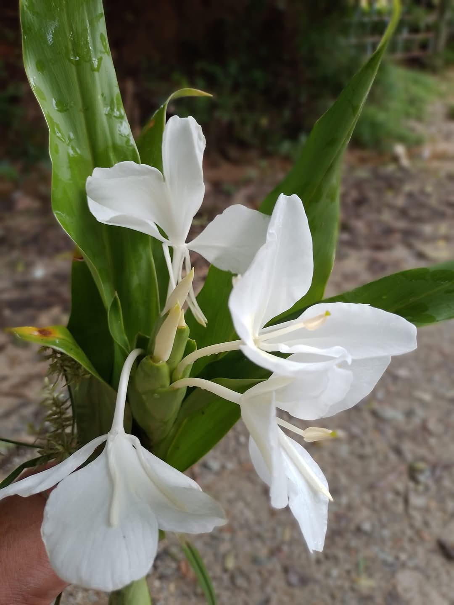
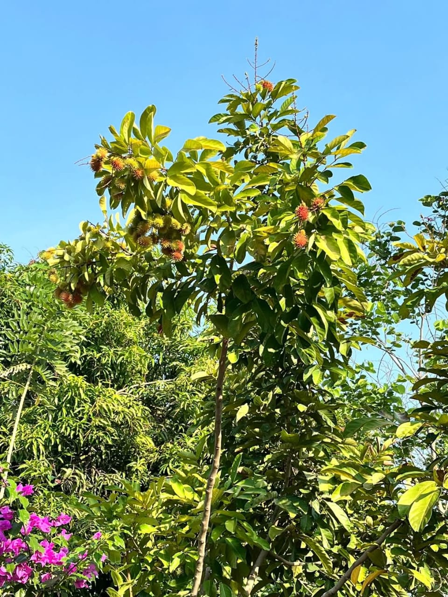
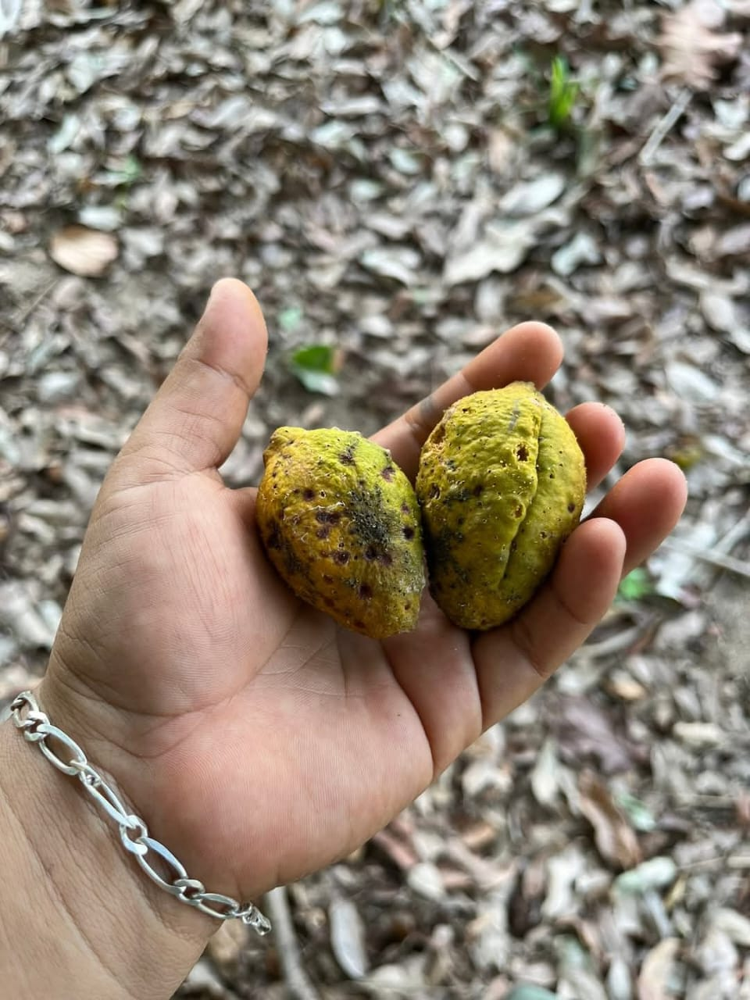
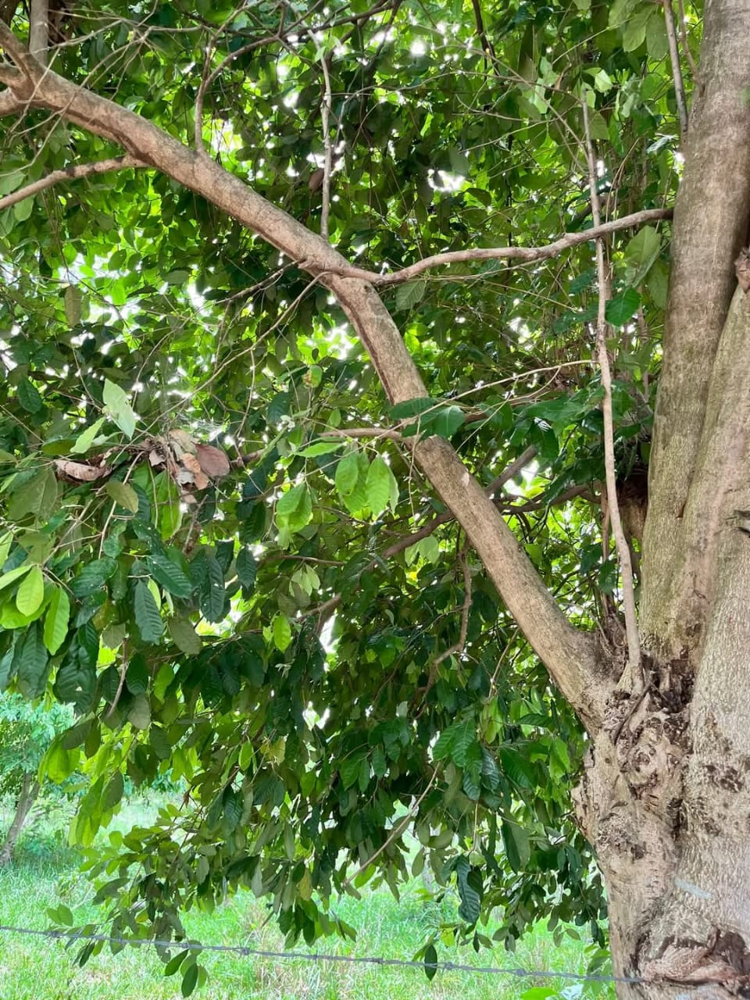
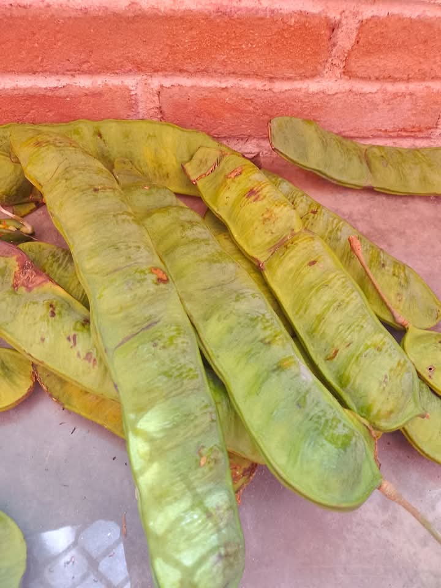
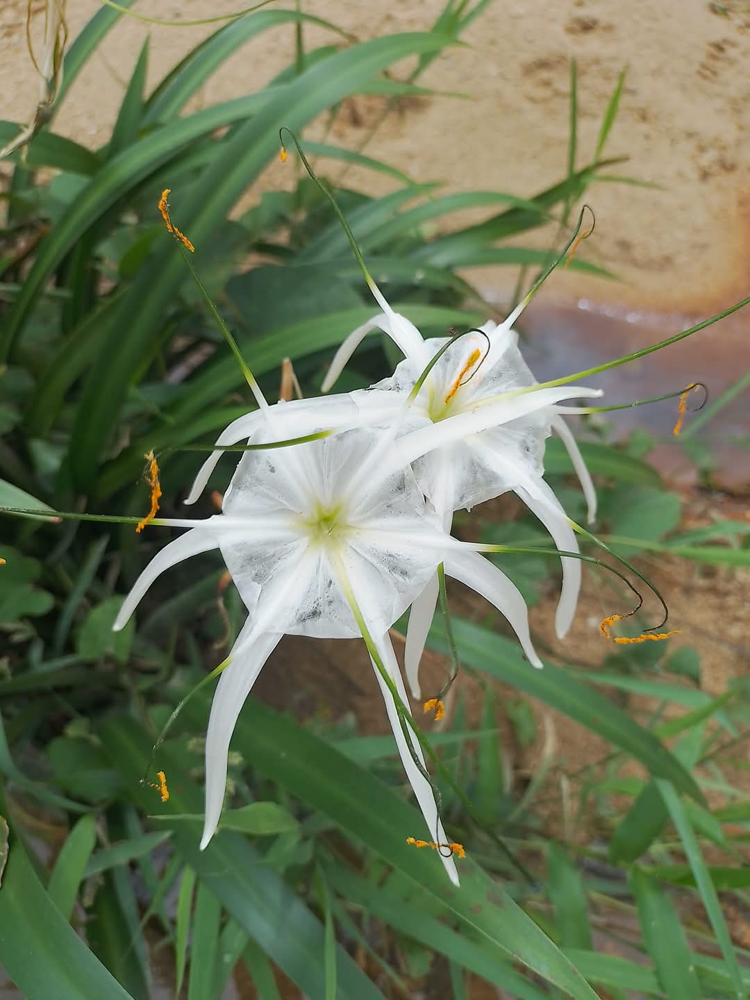
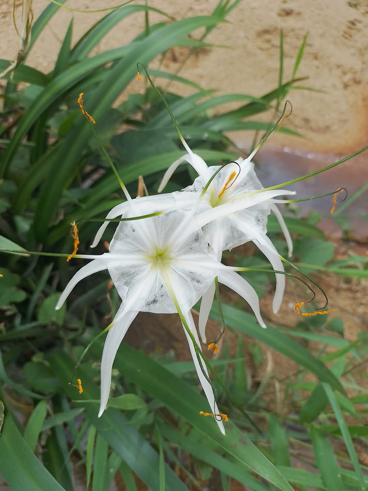
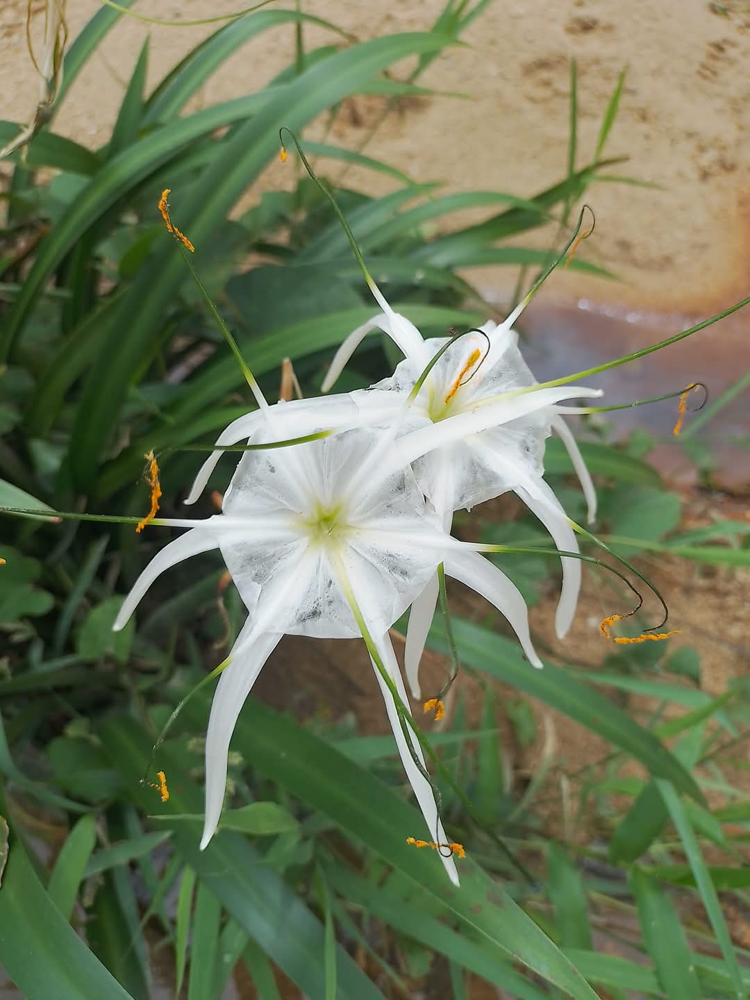

Presentación de la Flora de San Cristobal
San Cristóbal, ubicado en el municipio de San Agustín Chayuco, Oaxaca, es una región que se destaca por su rica biodiversidad. La flora de esta área comprende una amplia gama de especies vegetales, desde árboles frutales hasta plantas ornamentales. Estas plantas no solo embellecen el paisaje, sino que también juegan un papel crucial en el equilibrio ecológico y en el sustento de las comunidades locales. En este informe, se explorarán algunas de las plantas más representativas de San Cristóbal, destacando su nombre científico, sus nombres comunes y sus características principales.
Bougainvillea spectabilis: Planta ornamental conocida por sus vistosas brácteas de colores brillantes, que pueden ser púrpuras, rosas, rojas o blancas. Es una planta trepadora que se utiliza comúnmente en jardines y muros.
Paragüita (Cyperus alternifolius): Planta acuática que se utiliza frecuentemente en estanques y jardines acuáticos. Sus hojas largas y estrechas se disponen en forma de paraguas, lo que le da su nombre común.
Musa spp.: Árbol frutal que produce plátanos, un fruto alargado y dulce que es una fuente importante de energía y nutrientes. Los plátanos son ampliamente cultivados y consumidos en la región.
Citrus limon: Árbol frutal que produce limones, frutos cítricos de sabor ácido que se utilizan en una variedad de platillos y bebidas. El limón es conocido por su alto contenido de vitamina C.
Almendro (Prunus dulcis): Árbol frutal que produce almendras, semillas comestibles que se consumen tanto crudas como procesadas. Las almendras son una fuente rica de nutrientes, incluyendo proteínas y grasas saludables.
Palo de mandarina (Citrus reticulata): Árbol frutal que produce mandarinas, frutos cítricos dulces y fáciles de pelar. Las mandarinas son populares por su sabor y su alto contenido de vitamina C.
Icacos (Chrysobalanus icaco): Arbusto que produce frutos comestibles de color oscuro. Los icacos son utilizados en la preparación de dulces y conservas.
Nopal (Opuntia spp.): Planta cactácea que produce nopales (sus pencas) y tunas (sus frutos), ambos comestibles y nutritivos. El nopal es una planta versátil que se utiliza en una variedad de platillos mexicanos.
Cacao (Theobroma cacao): Árbol frutal que produce cacao, los granos de cacao son la materia prima para la producción de chocolate. El cacao es una fuente importante de antioxidantes y otros nutrientes.
Guanabo (Inga edulis): Árbol frutal que produce guanábanos, frutos grandes y dulces con una pulpa blanca y cremosa. Los guanábanos son consumidos frescos o utilizados en la preparación de bebidas y postres.
Nance (Byrsonima crassifolia): Árbol frutal que produce nances, pequeños frutos amarillos con un sabor agridulce. Los nances se utilizan en la preparación de bebidas fermentadas y dulces.
Guayaba (Psidium guajava): Árbol frutal que produce guayabas, frutos dulces y aromáticos que son ricos en vitamina C. Las guayabas se consumen frescas o se utilizan en la elaboración de jugos, mermeladas y otros productos.
Flor de copa de oro: Planta ornamental conocida por sus grandes flores amarillas en forma de copa. Estas flores son vistosas y fragantes, y se utilizan para embellecer jardines y espacios verdes.
Palos de mango: Árbol frutal que produce mangos, frutos jugosos y dulces con una variedad de colores y sabores. Los mangos son consumidos frescos o utilizados en una amplia gama de platillos y bebidas.
Ciruela: Árbol frutal que produce ciruelas, frutos redondos y jugosos con una piel que puede variar desde amarilla hasta morada. Las ciruelas son consumidas frescas o utilizadas en la elaboración de mermeladas y pasteles.
Guajinicuil (Inga vera): Árbol frutal que produce guajinicuiles, frutos alargados y dulces con una pulpa blanca y fibrosa. Los guajinicuiles son consumidos frescos y apreciados por su sabor dulce.






 

